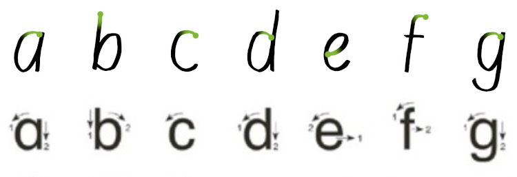

Manches soll nicht gleich in der Timeline versinken …
Auf dieser Website ist Raum für das, wofür meinem Mastodon-Account @charakterziffer zu kurzlebig ist. Mein Blog ist als Plus zu meinen Posts gedacht, eben „@cz+“. // Die letzten drei Artikel:
Nicht mehr so regelmäßig, aber doch immer mal wieder male ich ein Bild fürs Fenster meines Arbeitszimmers. Es hängt so in der Scheibe, dass die Passanten draußen es sehen können. Für ein bisschen Abwechslung tausche ich das Bild alle paar Wochen aus, wenn ich eine neue Idee aufs Papier gebracht habe. Hier meine letzten zwölf Fensterbilder:
Mein Lieblingsbild dieser Serie sind die weißen Wellenlinien mit dazwischen Grau/Braun. Die Mona-Lisa entstand als Bild auf der Schreibmaschine und beim Blumenbouquet habe ich mich nochmal an Ölfarben gewagt. Für die drei fallenden Blätter im letzten Bild habe ich Pulverpigmente mit Wasser und Gummi arabicum zu einer farbintensiven Wasserfarbe angerührt und irgendwann nutze ich auch mal die Acrylfarben, die ich schon eine Weile gekauft habe.
Mit den ersten zwölf Fensterbildern habe ich begonnen, um das Malen zu üben, die zweite Serie hat mich ein bisschen frustriert und nun versuche ich, das ganze Vorhaben etwas lockerer zu sehen. Seid ihr kreativ tätig und verfolgt ein regelmäßiges Projekt, das euch zum Üben motiviert?
Im Internet bzw. auf Social Media gibt es jährlich eine kleine Kunstaktion namens „Inktober“ – vom englischen ink (Tinte) und (Ok)tober. Bereits 2009 hat der amerikanische Illustrator Jake Parker diesen Wettbewerb ins Leben gerufen. Seitdem gibt er jedes Jahr eine Liste mit Stichworten („Prompts“) heraus. Wer mitmachen möchte, fertigt dazu täglich eine Zeichnung mit Tinte an. In den offiziellen Regeln wird empfohlen, die Zeichnungen im Netz zu veröffentlichen und mit einem Hashtag zu markieren. So kann man sie leicht finden.
Es geht dabei nicht um irgendwelche Preise oder um die tollste Zeichnung. Die Prompts sollen vor allem anregen, überhaupt etwas zu zeichnen und anderen zu präsentieren. Entsprechend vielfältig sind die Bilder der Teilnehmenden: Von einfachen Drei-Strich-Skizzen bis zu mehrfarbigen digitalen Bildern. Ich mache zum dritten Mal beim Inktober mit und habe mit dem Füller jeweils in der Größe 7×7 cm skizziert:
Meine 31 Zeichnungen (Nr. 17+27 sind kombiniert) zu den folgenden Inktober-Stichworten: Schnurrbart, weben, Krone, trübe, Hirsch, durchstechen, Seestern, waghalsig, schwer, fegen, Stachel, in Fetzen, trinken, Strunk, zerklüftet, Patzer, reich verziert, Abmachung, arktisch, Rivalen, Druckwelle, Knopf, Leuchtkäfer, Rowdy, Inferno, rätselhaft, Zwiebel, skelettartig, Lektion, unbesetzt, Auszeichnung. (Die Abbildung verlinkt auf eine größere Ansicht)
Wie gesagt sind die Regeln recht offen (ausführlich auf Englisch erläutert in den FAQ). Man muss nicht jeden Tag mitzeichnen, kann die Zeichnungen auch analog ausstellen, kann digital arbeiten, mit Bleistift vorzeichnen, Kalligrafie anwenden. Zwar wird vorgeschlagen, nur mit (schwarzer) Tinte zu zeichnen, aber natürlich gehen auch Filzstifte, Wasserfarben und alles, womit man sich sonst noch kreativ ausdrücken möchte.
Man muss sich auch nicht unbedingt an die offiziellen Prompts halten – aber es ist schon interessant zu sehen, wie andere Zeichner:innen die gleichen Stichworte umsetzen. Ich scrolle da regelmäßig durch Mastodon und gucke, was unter dem Schlagwort „Inktober“ gepostet wird. Auf dem populäreren Instagram kann man das ohne Account leider nicht sehen.
Warum der Inktober boykottiert wurde/wird
Nicht verschweigen möchte ich, dass es um den Inktober-Erfinder Jake Parker zwei Kontroversen gegeben hat. 2019 ließ er sich die Markenrechte am Logo und am Wort „Inktober“ schützen. Laut seinem Blogartikel wollte er damit verhindern, dass Leute außerhalb der Community mit seinem Logo Werbeartikel verkaufen oder zu Hass und Gewalt aufrufen. Es gab wohl versehentliche und später eingestellte Abmahnungen an Künstler:innen, die ihre Inktober-Werke auf Etsy verkauft haben.
Der zweite Vorfall war im Jahr darauf, als Jake Parker eine Voransicht seines Anleitungsbuches Inktober All Year Round: Your Indispensable Guide to Drawing With Ink zeigte. Ein anderer Illustrator behauptete daraufhin in einem YouTube-Video, dieses Buch sei von seinem eigenen abgekupfert. (Das Originalvideo ist nicht mehr öffentlich, aber es gibt abwägende Videos, Video-Analysen und -Kommentare zu dem möglichen Plagiat). Das Gerichtsverfahren dazu wurde eingestellt, der Vorwurf führte jedoch zu Boykott-Aufrufen und vielen alternativen Zeichenwettbewerben im Oktober.
Seit letztem Schuljahr gibt es an 43 Grundschulen in Bayern einen Modellversuch im Auftrag des Kultusministeriums. Bei diesem Projekt namens „FlowBY“ sollen Schüler:innen das Schreiben nicht in zwei Phasen lernen (erst Druckschrift, dann Schreibschrift), sondern einphasig. Sie üben also von Anfang an ein Schriftmodell aus flüssig geschriebenen Buchstaben, die dann später zu einer Schreibschrift verbunden werden können.
Ähnliche Bestrebungen gibt es mit der Grundschrift in anderen Bundesländern, wobei dieses Schriftmodell mit kleinen Häkchen an den Abstrichen den Schwerpunkt stark auf die Verbindung von Buchstaben legt. Bei FlowBY geht es eher darum, das flüssige Schreiben jedes Zeichens und den Schreibrhythmus einzuüben – denn Verbindungen zwischen den Buchstaben passieren auch in der Luft und müssen nicht zwingend als Strich auf dem Papier ausgeführt werden.
Vorhandene Lehrplanschriften
Als Grafiker, der sich sehr mit Schrift auseinandersetzt (Typografie, Lettering, Kalligrafie, Handschrift), durfte ich beim Start des Projekts mithelfen. Im Bayerischen Lehrplan gibt es als Richtbuchstaben nämlich nur eine statische Druckschrift (eine Variante der Helvetica) oder eben die Schulausgangsschrift bzw. Vereinfachte Ausgangsschrift. Diese Schreibschriften sind von der Formensprache her teilweise weit von der Druckschrift entfernt (z.B. k, p oder Y).
Meine Aufgabe war also, basierend auf den Druckbuchstaben ein Alphabet zu schreiben, das eine flüssige Schreibbewegung berücksichtigt. Wir haben uns dazu die vorhandenen Schriftmodelle angesehen und auch, was in anderen Ländern zu diesem Thema gemacht wird. Es gibt international vermehrt Bestrebungen, das Schreiben einphasig zu unterrichten. Auch historische Vorlagen spielten eine Rolle, v.a. die humanistische Kursive, die sich im 15. Jahrhundert als schreibeffiziente Handschrift entwickelt hat.
Nachteil des zweiphasigen Schrifterwerbs
Zunächst eine Druckschrift zu lernen hilft Schüler:innen, die Grundbestandteile von Buchstaben zu üben: Stammstrich, Bögen, Ovale. Diese Grundformen kombinieren die Kinder dann zu einzelnen Buchstaben. Das Problem: Dieses abgesetzte Konstruieren verhindert, einen flüssigen Schreibrhythmus zu entwickeln. Dazu soll danach die Schreibschrift verhelfen, die mit einem gänzlich neuen Bewegungsablauf (und leider mit einigen unnötigen Schnörkeln) wieder von vorne anfängt. Das kostet Zeit, die lieber in eine intensivere Übung einer Schreibroutine investiert werden sollte.
Beim einphasigen Schrifterwerb sind die Modellbuchstaben so angelegt, dass sie sich bereits in einem Zug schreiben lassen. Das ist zunächst schwieriger als einzelne Grundelemente zusammenzusetzen. Diese Mühe beim Schreiben zahlt sich aber aus: Die Kinder üben von Anfang an einen Bewegungsablauf, der sich durch Wiederholung einprägt und dann ohne Nachdenken ausgeführt werden kann. Wenn dieser Schreibrhythmus automatisch geschieht, können die Schüler:innen dann einzelne Buchstaben auch miteinander verbinden.
Motorisch günstige Buchstaben
Wie gesagt sollten die neuen Richtbuchstaben nah an der Druckschrift bleiben, aber eine flüssige Schreibbewegung berücksichtigen. Hier mein geschriebener Entwurf im direkten Vergleich zur Vorgabe im Lehrplan:

Die obere Zeile zeigt meine handgeschriebenen Buchstaben. Der grüne Punkt und der kleine Farbverlauf kennzeichnet den Schreibbeginn. Darunter die Richtbuchstaben aus dem bayerischen Lehrplan mit kleinen Pfeilen für die Reihenfolge der einzelnen Striche. (Leider haben die Buchstaben auch im Lehrplan eine so schlechte Bildqualität)
Meine Buchstaben lassen sich in einem Zug schreiben. Beispielsweise startet man beim kleinen b oben am Stamm, zieht den Stift nach unten, um ihn dann ohne abzusetzen nach oben in den Bogen zu führen. Es ist eine Konstruktion, bei der der Stift umkehrt und bereits geschriebene Striche teilweise überschreibt.
Bei der Druckschrift schreibt (oder zeichnet?) man auch erst den Stamm, hebt den Stift dann aber vom Papier, um auf mittlerer Höhe mit dem Bogen neu anzusetzen. Ein kleiner, aber entscheidender Unterschied!
Bei den Großbuchstaben hat sich ehrlicherweise gar nicht so viel verändert – sie kommen deutlich seltener im Text vor, darum ist hier Schreiben in nur einem Zug fürs Schreibtempo nicht so entscheidend. Wichtiger war hier die Ähnlichkeit zur Druckschrift.
Natürlich sind schreibeffiziente Eigenschaften wie die umkehrende Konstruktion nicht meine eigene Erfindung. Ich habe mich dabei an vorhandenen Schriftmodellen orientiert und weitere Merkmale in meine Vorlage eingebaut, z.B. die eher ovale statt runde Form sowie die leichte Neigung der Buchstaben (beides Eigenschaften, die sich durchs schnelle Schreiben von selbst ergeben und in der Vorlage nicht überbetont werden müssen). Mehr zur Einübung des flüssig schreibbaren Alphabets liefert ein kompaktes Infoblatt.
Kein digitaler Font
Zumindest im Stadium des Modellversuchs wird es keine digitale Schrift meines Entwurfs geben, mit der Lehrkräfte beispielsweise selbst Arbeitsblätter gestalten könnten. Es gibt in dieser Hinsicht allerdings Entwicklungen aus anderen Ländern. Empfehlenswerte Alternativen sind die kommerzielle Schrift Alku aus Finnland, die kostenlose Primæ aus Österreich (zum Lernen besser die unverbundene Variante!), die OpenSource-Schrift Playpen Sans von TypeTogether, die Grundschrift oder auch die deutschschweizer Basisschrift (kostenlos bei nicht-kommerzieller Verwendung).
Das Wort kombiniert Persönlichkeit (Charakter) mit Sachlichem (Ziffer). Zusammengesetzt ergibt sich ein Synonym für Mediävalziffer, eine Zahlenvariante mit Ober- und Unterlängen.
Schriftarten dieses Blogs
Wenn dein Browser eingebettete Schriften (WOFF2) unterstützt, dann liest du die Fließtexte hier in der Source Sans Pro von Paul D. Hunt, erschienen 2012 bei Adobe.
Die Überschriften sind aus der czSlab gesetzt, die ich für dieses Blog gestaltet habe. Sie orientiert sich an Yanones viel ausgefeilterer Antithesis von 2014.
§ 1 Externe Links · Dieses Blog verlinkt auf Websites Dritter. Zum Zeitpunkt der erstmaligen Verlinkung waren dort keine Rechtsverstöße ersichtlich. Da ich keinen Einfluss auf fremde Websites habe, kann ich für deren Inhalte und Gestaltung keine Haftung übernehmen. Sollte ich von Rechtsverstößen erfahren, entferne ich die Verlinkung unverzüglich. Eine ständige Kontrolle der externen Links ist ohne konkrete Hinweise aber nicht zumutbar.
§ 2 Datenschutzerklärung · Mir ist der Schutz deiner Daten sehr wichtig. Deshalb verzichte ich auf Cookies, vermeide möglichst Dienste von Drittanbietern und erhebe so wenige Daten wie es geht. Diese Website kann ohne die Angabe persönlicher Daten genutzt werden.
Die einzige Ausnahme sind Kommentare. Wenn du einen meiner Texte kommentierst, bekomme ich die eingegebenen Daten und eine Zeitangabe per (prinzipiell unsicherer) E-Mail zugestellt. Falls dein Kommentar sachlich zur Diskussion beiträgt, ergänze ich ihn öffentlich sichtbar unter dem entsprechenden Artikel. Dabei sind sämtliche Angaben freiwillig (Name, Website, Mailadresse, Kommentar) – auch anonyme Kommentare sind möglich.
§ 3 Widerspruch gegen Direktwerbung · Die Verwendung meiner Kontaktdaten zur gewerblichen Werbung ist ausdrücklich nicht erwünscht; ich widerspreche hiermit jeder kommerziellen Nutzung und Weitergabe meiner Daten (gemäß § 21 DSGVO). // Über private Fanpost freue ich mich allerdings sehr und antworte darauf mit großem Vergnügen!
 @charak
@charak